This is the self-study companion to the lecture deck: full narrative + all code, meant to be read and run. For the slide version (code hidden), open the presentation deck.
Code
# Environment setup: pick up local edits to libdpy/ without restarting the kernel.try: get_ipython().run_line_magic('load_ext', 'autoreload') get_ipython().run_line_magic('autoreload', '2')exceptException:passtry:import libdpyexceptImportError:%pip install -q "libdpy[notebook] @ git+https://github.com/applied-dp-course/pub_lib.git"import libdpy
The autoreload extension is already loaded. To reload it, use:
%reload_ext autoreload
Code
from functools import partialimport matplotlib.pyplot as pltimport numpy as npimport pandas as pdimport plotly.io as piofrom libdpy.assignment_specific.private_estimation.lecture_figures import ( build_median_section_artifact, build_raw_mean_section_artifact, make_accuracy_leaderboard_figure, make_oracle_income_histogram_figure, make_inverse_sensitivity_landscape_figure, make_private_income_noisy_histogram_figure, make_private_location_histogram_figure, make_private_scale_pairwise_histogram_figure,)from libdpy.assignment_specific.private_estimation.utils import ( PUBLIC_INCOME_BIN_EDGES, PUBLIC_INCOME_CANDIDATES, PUBLIC_INVERSE_SENSITIVITY_THRESHOLDS, PUBLIC_QUANTILE_LOWER, PUBLIC_QUANTILE_UPPER, PUBLIC_SCALE_DIFF_BIN_EDGES, DEFAULT_K_SIGMA, DataProvenance, empirical_quantile_clipped_mean, empirical_quantile_output_law, empirical_mu_sigma_clipped_mean, accuracy_summary_table, audit_panel, budget_ledger_table, empirical_mu_sigma_bounds, empirical_mu_sigma_clipped_stat, empirical_mu_sigma_noise_scale, empirical_mu_sigma_output_law, evaluate_accuracy, extract_income, fixed_bin_noisy_histogram, gaussian_histogram_mean, clipped_noisy_mean, gaussian_noise_std, histogram_replacement_trace, private_mu_sigma_clipped_mean, private_scale_from_pairwise_diffs, enforce_clip_bounds, private_inverse_sensitivity_quantile, private_quantile_exponential, public_range_noisy_mean, rank_utility, load_fulton, median_value_plus_noise, median_perturbation_trace, neighbor_witness_table, proposals_diagnoses_repairs_from_leaderboard, quantile_clipping_perturbation_trace, raw_mean_perturbation_trace, build_engineered_quantile_neighbor_pair, replace_one_row, select_typical_median_pair, replacement_swap_influences, population_rank_cdf, select_typical_mu_sigma_pair, split_base_and_pool, stability_summary,)from libdpy.assignment_specific.private_estimation.embed_interactives import ( PrivateEstimationAuditROCVisualizer,)from libdpy.visualization.roc_plots import ( TheoryROCVisualizer, make_empirical_roc_selected_threshold_figure,)from libdpy.assignment_specific.private_estimation.visualizations import ( PROVENANCE_STYLE, sorted_dataset_bars_figure, sorted_neighbor_bars_figure,)# PUBLIC-MENU CONTRACT: all candidate grids, bin edges, transformations,# hypothesis lists, clipping multipliers, and subgroup definitions are fixed# before any private sample is touched, or come from designated public data.SEED =42N =1000EPS_TOTAL =1.0DELTA =1e-2# Accuracy-regime contract. Many independent datasets, one mechanism draw each,# so signed-error histograms look smooth without repeated calls per dataset.N_DATASETS_RECOMMENDED =5_000N_RUNS_RECOMMENDED =1N_DATASETS = N_DATASETS_RECOMMENDEDN_RUNS = N_RUNS_RECOMMENDEDHISTOGRAM_TRIALS =5_000assert N ==1000assert EPS_TOTAL ==1.0# Epsilon budget: name slices and assert sums (even when the whole budget goes to one step).EPS_MEAN = EPS_TOTALassertabs(EPS_MEAN - EPS_TOTAL) <1e-12# Capstone Gaussian-localization split (S8).EPS_SCALE =0.25EPS_LOCATION =0.25EPS_GAUSS_MEAN =0.50assertabs((EPS_SCALE + EPS_LOCATION + EPS_GAUSS_MEAN) - EPS_TOTAL) <1e-12# Child seeds (documented map from lecture root SEED).SEED_MAP = {"accuracy_public_range_mean": SEED,"typical_mu_sigma_pair": SEED +11,"accuracy_private_ms_one": SEED +2,"accuracy_private_ms_iter": SEED +3,"accuracy_median_value_noise": SEED,"accuracy_private_quantile": SEED +6,"accuracy_private_qcm": SEED +7,"accuracy_gaussian_loc_synth": SEED +9,"accuracy_gaussian_loc_fulton": SEED +8,"audit_ms_repair_one": SEED +40,"audit_ms_repair_three": SEED +41,"typical_median_pair": SEED +17,"accuracy_empirical_quantile": SEED +19,"audit_s3_empirical_quantile": SEED +18,"gaussian_synth_population": SEED +100,}df = load_fulton()income_all = extract_income(df)D, witness_pool = split_base_and_pool(income_all, n_base=N, seed=SEED)rng = np.random.default_rng(SEED)# Keep Plotly figures interactive in notebooks when the frontend supports MIME rendering.pio.renderers.default ="plotly_mimetype+notebook_connected"leaderboard_parts = []mean_targets = {'value': lambda x: float(np.mean(x))}median_targets = {'value': lambda x: float(np.median(x)),'rank': lambda released: population_rank_cdf(income_all, released),}print(f"Fulton rows: {len(df):,} | accuracy sample N={N:,} | substitution adjacency")print(f"Main privacy contract: epsilon_total={EPS_TOTAL:.1f}")print(f"Accuracy sweep in this notebook: {N_DATASETS} datasets x {N_RUNS} run (recommended: {N_DATASETS_RECOMMENDED} x {N_RUNS_RECOMMENDED})")print(f"Empirical audit histograms: {HISTOGRAM_TRIALS} mechanism draws per neighboring dataset")
Fulton rows: 25,766 | accuracy sample N=1,000 | substitution adjacency
Main privacy contract: epsilon_total=1.0
Accuracy sweep in this notebook: 5000 datasets x 1 run (recommended: 5000 x 1)
Empirical audit histograms: 5000 mechanism draws per neighboring dataset
Lecture 5 — Private Estimation by Auditing Failed Estimators
Thesis: private estimation is not “compute the statistic, then add noise.” Every data-dependent choice made before the noise is also part of the release.
Running problem: estimate a one-number income statistic from a private Fulton-style sample of N = 1000 with total privacy budget epsilon = 1.0. We start with the mean, then move through scale-based clipping, quantile-based clipping, medians, and histogram localization.
S0 — Contract and Method
Every section follows the same order: visible mechanism code, an accuracy comparison under the fixed contract when appropriate, then a separate witness/audit explanation if the method is invalid. The order is deliberately cumulative: mean estimation first, then empirical mu ± k sigma, empirical quantiles, median/inverse sensitivity, private quantile clipping, and finally noisy histograms for binning and Gaussian-style localization.
Before proposing mechanisms, look once at the full Fulton income dataset as a non-private teaching artifact. The next plot uses the same sorted-dataset visual language as the neighboring-pair examples later in the notebook. X-axis: sorted row index in the full dataset. Y-axis: income.
Code
fig = sorted_dataset_bars_figure( income_all, title=f'Full Fulton income dataset (n={len(income_all):,}) — exact, not a private release', provenance=DataProvenance.ORACLE_DIAGNOSTIC, yscale='linear', show_quantiles=True, show_median=True,)
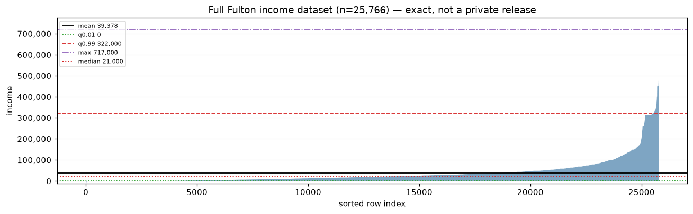
The same full dataset is shown once as an exact histogram. This is the tempting non-private EDA view that later motivates fixed public bins and noisy histograms. X-axis: public income bins in dollars. Y-axis: exact row counts.
First proposal: release the sample mean with Gaussian noise calibrated to a public salary-domain range, not to the observed Fulton range. This is a valid bounded-domain mean-query template only after choosing the appropriate Gaussian calibration constants; here the point is utility: if the public range is one or two orders of magnitude larger than the real salaries, the required noise is correspondingly large.
Epsilon: 1.0
Public salary-domain range: 10,000,000
Observed full-Fulton income range, for context only: 727,000
Gaussian noise std: 18,778.8
One accuracy draw before the sweep: draw a size-N dataset from Fulton, run the mechanism once, and compare the release to the same sample’s non-private mean.
single draw: target=43,736, estimate=56,065, error=12,329
The next code cell displays the signed-error decomposition for this public-range noisy mean on ordinary size-N=1000 accuracy samples. The three lines are sample mean - full Fulton mean, released estimate - sample mean, and released estimate - full Fulton mean. X-axis: signed error in dollars. Y-axis: probability per bin.
Code
raw_accuracy_rows = evaluate_accuracy( raw_mean_attempt, income_all, mean_targets, n=N, n_datasets=N_DATASETS, n_runs=N_RUNS, seed=SEED_MAP["accuracy_public_range_mean"], method='public-range noisy mean', privacy_status='valid', estimate_target='mean', epsilon_total=EPS_TOTAL, notes='epsilon=1 noise calibrated to a conservative public salary-domain range',)leaderboard_parts.append(raw_accuracy_rows)fig = make_accuracy_leaderboard_figure(raw_accuracy_rows, estimate_target='mean', error_metric='value')fig
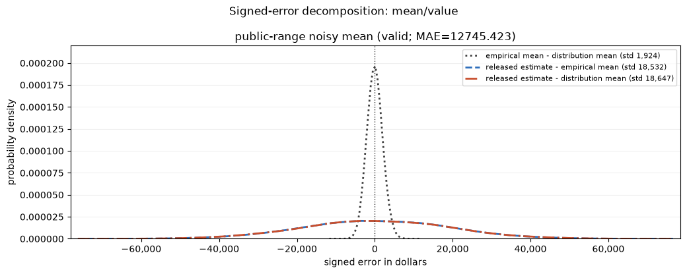
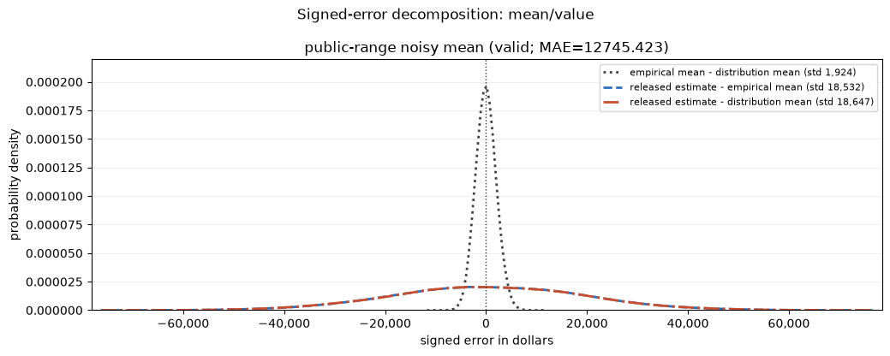
This cell computes a typical-data substitution probe for the raw mean without rendering dataframe output. It is a non-audit diagnostic used to support the surrounding discussion.
Code
typical_swaps = replacement_swap_influences( D, witness_pool, lambda x: float(np.mean(x)), n_swaps=300, seed=SEED)typical_swaps_summary = stability_summary( typical_swaps, 'typical substitution swaps for raw mean')
This cell constructs the extreme-real substitution diagnostic for the public-range raw mean without rendering witness dataframes. The point is referenced in prose; the public-range mechanism is not treated as broken by this row.
Diagnosis: a raw mean can be made private by assuming a very large public data-domain range, but the resulting noise is too large to be useful. The next attempt tries to reduce noise by learning a narrower mu ± k sigma range; that learning step is where privacy can fail.
S2 — Empirical mu ± k sigma Clipping
Bad proposal: learn mu and sigma from the private sample, clip to mu ± k sigma, then add epsilon = 1 Gaussian noise to the clipped mean. This often looks good on ordinary data because the empirical mean and standard deviation barely move under typical row swaps. It is still invalid: the clipping interval and the noise standard deviation are data-dependent private releases.
First look at an ordinary substitution in a typical size-N=1000 Fulton sample. This is a stability probe, not a privacy proof: it constructs a neighboring pair whose learned mu ± k sigma interval barely moves, explaining why the invalid rule is tempting on ordinary data.
The next plot shows the typical neighboring pair. The sorted samples and learned upper clipping lines are almost unchanged, which explains why this invalid proposal is tempting on ordinary data.
The next plot shows the corresponding analytical Gaussian ROC for the same typical pair. X-axis: false positive rate. Y-axis: true positive rate. The two output laws use the deterministic clipped means and the common Gaussian noise std required for epsilon = 1 at DELTA on this pair, not the broken proposal’s data-dependent std. This calibrated analytical ROC shows the epsilon-1 bound line; it does not mark a selected-threshold circle because no audit threshold is being selected in this plot.
Loading interactive… (first load downloads a Python runtime)
Now move to an engineered size-N=1000 leverage example. The pair is still a substitution-neighbor pair with the same size on both sides, but the incoming value is fabricated to make the empirical standard deviation and learned clipping interval move visibly.
The next plot shows the engineered neighboring pair. Only one row differs between D and D'. The horizontal lines mark the sample mean μ and the learned upper clip μ+4σ (with empirical σ in the legend). Substituting one upper-tail row barely moves μ, but it inflates σ and therefore moves the clipping bound.
This is the primary privacy-failure ROC for the engineered size-N=1000 pair. It uses the analytical output laws of the broken data-dependent mu ± k sigma proposal: two Gaussians with different deterministic clipped means and different learned noise stds on D and D'. The thick purple line is the tight(ε, δ)-DP bound for this ROC; the open circle marks the governing point where it meets the curve. That tight ε exceeds the claimed epsilon=1 budget.
Loading interactive… (first load downloads a Python runtime)
The private repair spends epsilon on noisy truncated-moment localization and the final clipped mean. The budget ledger is computed for bookkeeping but not rendered as dataframe output in the mainline notebook.
Before looking at accuracy, audit the valid private repair on the same engineered size-N=1000 neighboring pair. Each figure matches the auditing lecture: empirical output densities for H_0 and H_1 with the ROC-selected threshold, plus the finite-sample empirical ROC with the governing point and the claimed epsilon = 1 bound.
The extractor audits only the final released mean (result['estimate']), so plug-in ε̂ is an empirical lower bound on that scalar release — consistent with, but not a proof of, the composed ε=1 claim. It cannot see the private μ̂/σ̂ localization that consumed 60% of the budget.
Repeat the same audit on the three-round localization repair with the same total epsilon = 1 budget. Plug-in ε̂ values for one and three rounds are typically similar (both well below the claimed budget): iteration sharpens clip bounds for accuracy, not privacy.
The next figure compares the one-step and multi-step private mu, sigma repairs on the mean track. Both spend the same total ε; extra localization rounds split that budget across rounds to narrow the final clipping interval and improve accuracy — they do not change the privacy guarantee.
One accuracy draw for the one-step private mu±sigma repair before the sweep.
single draw: target=37,452, estimate=36,816, error=-637
Typical-accuracy sweep for the one-step private mu±sigma repair (N_DATASETS replicates × N_RUNS mechanism draw each). X-axis: signed error in dollars. Y-axis: probability per bin.
Diagnosis: empirical center and scale are private-data releases. A private approximation can be built from truncated noisy moments and iterated with budget splitting, but its useful accuracy is an empirical question rather than something certified by the failed empirical sensitivity argument.
S3 — Empirical Quantile Clipping
Bad proposal: learn the 1% and 99% bounds from the private sample, clip to those bounds, then add Gaussian noise to the clipped mean. This is the quantile analogue of the empirical mu ± k sigma bug: the final noise standard deviation is calibrated to a learned interval, but the interval and therefore the variance are themselves data-dependent private releases.
The broken empirical-quantile proposal is diagnosed with substitution pairs and ROCs rather than an accuracy histogram. This follows the valid-only accuracy-display rule: invalid methods can look accurate, but the section-level histogram is reserved for repaired private methods.
First look at a typical size-N=1000 pair. We replace one row by a huge value, but the value is clipped near the empirical 99% quantile, so both the clipped mean and the Gaussian std barely move. This is why the proposal is tempting on benign data.
The next plot shows a typical neighboring pair. Even a huge substituted row is clipped near the empirical 99% quantile, so the two sorted datasets are almost indistinguishable after clipping.
Code
fig = sorted_neighbor_bars_figure( typical_quantile_D, typical_quantile_D_prime, title='Typical pair: one huge substituted row is clipped away', yscale='linear', provenance=DataProvenance.REAL_DATA,)
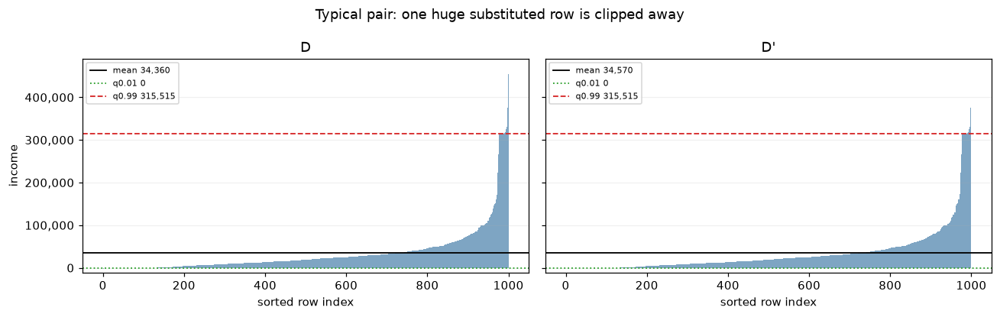
The next plot shows the analytical Gaussian ROC for that typical pair. It uses the deterministic clipped means and the common Gaussian std required for epsilon = 1 at DELTA on this pair, not the broken proposal’s learned std. This calibrated analytical ROC shows the epsilon-1 bound line without a selected-threshold circle.
Loading interactive… (first load downloads a Python runtime)
Now move to an engineered micro-example. The pair is still a valid substitution-neighbor pair of size N=1000, but the rows are arranged so the 99% quantile sits just below a flat upper tail ($30k bulk → $120k tail). Replacing the top bulk order statistic (not a low row) by a witness above the tail jumps the learned upper clip by ~$90k and sharply increases the Gaussian noise scale, while the released-output distributions still overlap enough to audit the failure.
Code
# Engineered pair: q0.99 sits between the bulk max (~30k) and a flat 120k tail.( fabricated_quantile_D, fabricated_quantile_D_prime, fabricated_out_idx, fabricated_witness,) = build_engineered_quantile_neighbor_pair(N)assertlen(fabricated_quantile_D) ==len(fabricated_quantile_D_prime) == Nq99_D =float(np.quantile(fabricated_quantile_D, HIGH_Q))q99_D_prime =float(np.quantile(fabricated_quantile_D_prime, HIGH_Q))print(f"learned upper quantile q{HIGH_Q:g}: "f"D={q99_D:,.0f} D'={q99_D_prime:,.0f} "f"shift={q99_D_prime - q99_D:,.0f}")
The next plot shows the engineered neighboring pair. Only one row differs between D and D'. The dashed red q0.99 line jumps from ~$31k to $120k even though the sample means barely move.
Code
fig = sorted_neighbor_bars_figure( fabricated_quantile_D, fabricated_quantile_D_prime, title='Engineered pair: one substitution moves the learned upper quantile', yscale='linear', provenance=DataProvenance.CONSTRUCTED_WITNESS,)
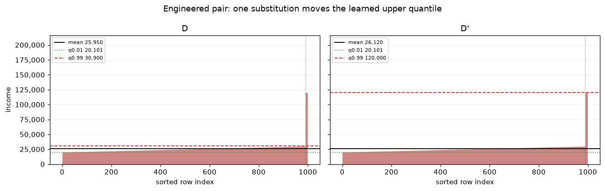
This is the primary privacy-failure ROC for the engineered empirical-quantile pair. It uses the analytical output laws of the broken data-dependent clipping rule: two Gaussians with different deterministic clipped means and different learned noise stds on D and D'. The thick purple line is the tight (ε, δ)-DP bound for this ROC, with the governing point marked where it meets the curve. That tight ε exceeds the claimed epsilon=1 budget.
Loading interactive… (first load downloads a Python runtime)
One accuracy draw for empirical quantile clipping: learn bounds from the sample, clip, calibrate Gaussian noise to the clip width, release the noisy clipped mean. Compare to the sample mean on the same draw.
Typical-accuracy sweep for the invalid empirical-quantile clipped mean under the fixed contract (N_DATASETS replicates × N_RUNS mechanism draw each). X-axis: signed error in dollars. Y-axis: probability per bin.
Privacy audit on the engineered quantile-gap pair: run the broken mechanism on D and D', select threshold τ★ from the empirical ROC, and read off plug-in ε̂. Left panel: sampled output densities with τ★ marked. Right panel: empirical ROC with governing point.
Interactive empirical ROC explorer for the S3 audit samples. Toggle Compute ε to overlay the claimed (ε, δ) bound and the ROC-selected threshold τ★ on the output-density panel.
Diagnosis: adding noise to the final number does not privatize the earlier data-dependent clipping choice.
S4 — Median as a Robust Statistic
The median looks robust on ordinary Fulton data: a typical substitution neighbor moves it only a little. But value sensitivity is measured by the worst-case neighbor, not the typical one. The engineered pair below arranges rows so one substitution jumps the median across a wide value gap.
Start with a typical size-N=1000 Fulton substitution pair. The median moves only a little under an ordinary real-data swap, which is why the median looks robust on benign data.
The next plot uses the same sorted-neighbor style as the previous failed-estimator examples. Both panels have N=1000 rows; the horizontal dotted line marks the sample median.
Code
fig = sorted_neighbor_bars_figure( D, typical_median_D_prime, title=f'Typical median pair: one substitution changes median by {typical_median_shift:,.0f}', provenance=DataProvenance.REAL_DATA, yscale='linear', show_quantiles=False, show_median=True,)
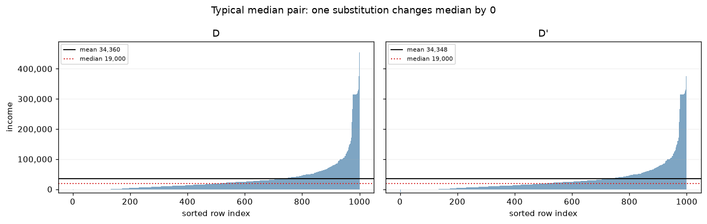
Now show the engineered size-N=1000 median-gap witness. This is still substitution adjacency, but the rows are arranged so one changed row moves the median across the constructed value gap.
Code
median_artifact = build_median_section_artifact(seed=SEED)assertlen(median_artifact.D) ==len(median_artifact.D_prime) == Nmedian_witness_rows = neighbor_witness_table( section='S4 median value sensitivity', d_description=f'engineered median-gap subset (n={len(median_artifact.D)}; 501 low + 499 high before swap)', d_prime_description=f'substitute row {median_artifact.out_idx} with high-side row {median_artifact.witness:,.0f}', adjacency='substitution (one row out, one row in; n unchanged)', n=len(median_artifact.D), algorithm_effect='median jumps across the constructed value gap', audit_target='released noisy median value', provenance=DataProvenance.CONSTRUCTED_WITNESS,)median_trace_rows = median_perturbation_trace( median_artifact.D, median_artifact.D_prime, median_artifact.out_idx)engineered_median_shift =abs(float(np.median(median_artifact.D_prime)) -float(np.median(median_artifact.D)))
The next plot uses the same sorted-neighbor style for the engineered pair. The large vertical gap around the middle ranks is the value-sensitivity problem.
Code
fig = sorted_neighbor_bars_figure( median_artifact.D, median_artifact.D_prime, title=f'Engineered median-gap pair: one substitution changes median by {engineered_median_shift:,.0f}', provenance=DataProvenance.CONSTRUCTED_WITNESS, yscale='linear', show_quantiles=False, show_median=True,)
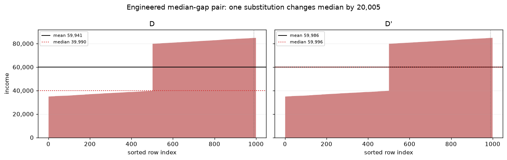
Naive proposal: release the sample median plus value noise calibrated to the full public value range. That calibration is privacy-valid, but the noise std dwarfs both the typical and engineered median shifts. The next figure applies the signed-error decomposition in dollars. The three lines are sample median - full Fulton median, released estimate - sample median, and released estimate - full Fulton median.
Median value sensitivity: public range=350,000
Gaussian std=657,256; variance=431,986,036,226
One accuracy draw for median value+noise: sample a dataset, release the noisy median calibrated to the public value range, compare to the sample median.
single draw: target=22,030, estimate=453,555, error=431,525
Typical-accuracy sweep for median value+noise under the fixed contract. X-axis: signed error in dollars. Y-axis: probability per bin.
Code
median_rows = evaluate_accuracy( median_value_noise_attempt, income_all, median_targets, n=N, n_datasets=N_DATASETS, n_runs=N_RUNS, seed=SEED_MAP["accuracy_median_value_noise"], method='median value+noise', privacy_status='valid but low-utility', estimate_target='median', epsilon_total=EPS_TOTAL, notes='Gaussian noise calibrated to the full public value range',)leaderboard_parts.append(median_rows)fig = make_accuracy_leaderboard_figure(median_rows, estimate_target='median', error_metric='value')fig
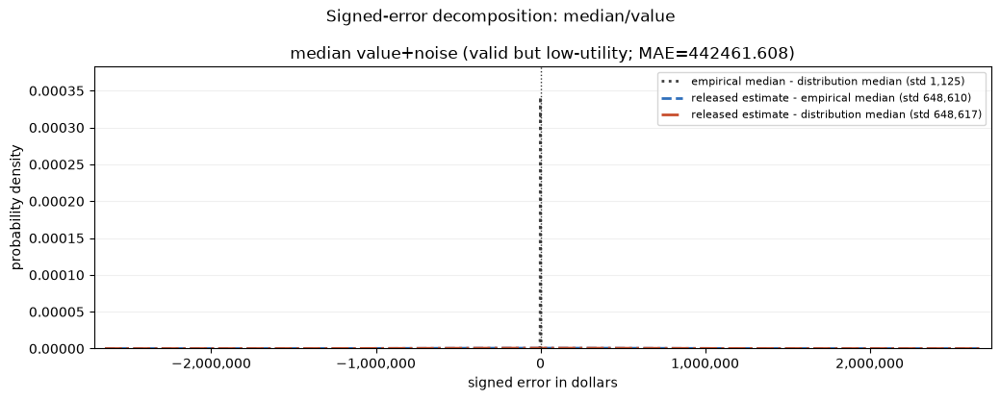
The next figure uses signed CDF error instead of dollars, with rank normalized by reference size. The distribution-error line is rank(release) / |full data| − 0.5; the empirical-error line is rank(release) / 1000 − 0.5; the gray line is the sample-vs-population CDF shift at the released value. X-axis: signed CDF error (rank / size − 0.5). Y-axis: probability per bin.
Why it piles up at ±0.5: the value noise here has std ≈ 657k (calibrated to the full 350k public range, the median’s worst-case value sensitivity) around a ≈ 21k median, so the released number lands below the smallest or above the largest row most of the time. Its rank then saturates at 0 or n, sending the CDF error to −0.5 or +0.5. The bimodal shape is the signature of value-noise destroying the median — and the motivation for the rank-based repair in S5, whose sensitivity is 1 regardless of the value range.
Do not audit the range-calibrated median value-noise mechanism here. It is already privacy-valid because the Gaussian std is calibrated to the full public value range, and that std is much larger than the engineered median jump. An empirical ROC is therefore nearly random and only restates that the mechanism hides the jump by adding unusably large noise. The useful lesson is utility: value noise protects privacy by destroying the released dollar value, so the repair changes the metric to rank error.
S5 — Repair 1: Median via Inverse Sensitivity
For a value t, the score is the negative rank error: -|#{x_i <= t} - alpha n|. This is an inverse-sensitivity idea: values close to the desired rank need fewer row changes to become optimal, so they get higher probability. Under substitution, the rank changes by at most one, so the score sensitivity is 1.
We realize this as the grid-free interval exponential mechanism over the public range [0, 10M]: partition the range at the sorted sample, give every interval between adjacent order statistics its (constant) rank-distance score weighted by log(width), draw one interval by the exponential mechanism, and release a uniform point inside it. The output is continuous — there is no candidate grid, so accuracy is not hostage to an arbitrary resolution.
The next plot visualizes the score landscape on a public display grid (it is only for plotting; the mechanism itself samples continuously). Left: rank loss for each value t. Right: the corresponding exponential-mechanism weight ∝ exp(ε·score/2) at epsilon = 1. Both x-axes are values in thousands of dollars.
Code
ALPHA =0.5# Display-only score landscape on a public grid; the mechanism itself (below) is grid-free.fig = make_inverse_sensitivity_landscape_figure(D, alpha=ALPHA, epsilon=EPS_TOTAL)fig
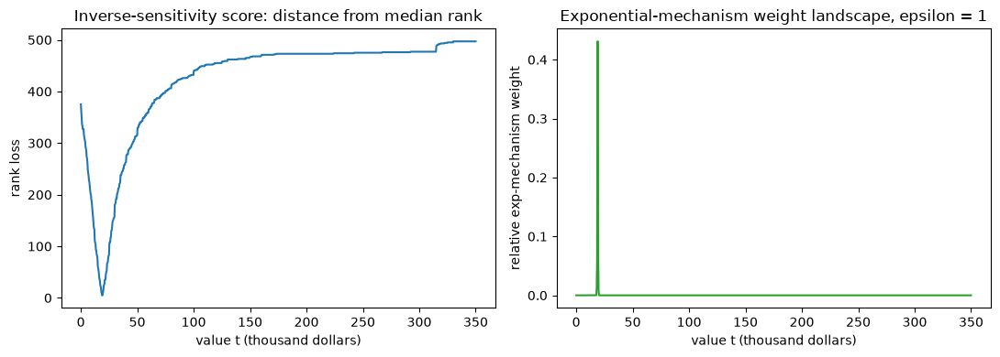
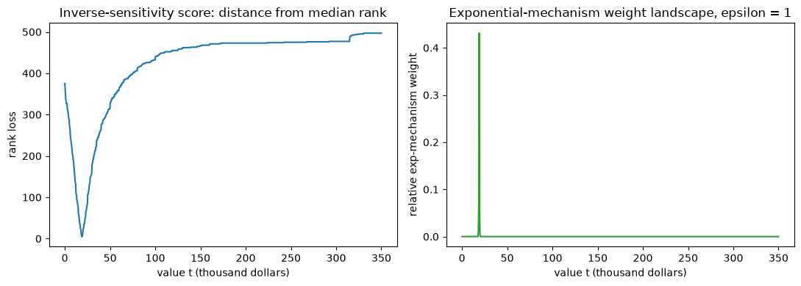
The continuous interval exponential mechanism over public range [0, 10M].
Exact sample median: 19,000 | one private interval-exponential draw: 19,339.33
The next figure adds the valid private inverse-sensitivity median to the median value track. It uses the same three signed-error lines in dollar units, so the private repair can be compared with the earlier median value+noise proposal.
One accuracy draw for the private inverse-sensitivity median before the sweep.
single draw: target=21,350, estimate=21,172, error=-178
Typical-accuracy sweep for the private inverse-sensitivity median. X-axis: signed error in dollars. Y-axis: probability per bin.
Code
private_quantile_rows = evaluate_accuracy( private_inverse_sensitivity_median, income_all, median_targets, n=N, n_datasets=N_DATASETS, n_runs=N_RUNS, seed=SEED_MAP["accuracy_private_quantile"], method='private inverse-sensitivity median', privacy_status='valid', estimate_target='median', epsilon_total=EPS_TOTAL, notes='grid-free interval exponential mechanism over public range [0, 10M]',)leaderboard_parts.append(private_quantile_rows)fig = make_accuracy_leaderboard_figure(private_quantile_rows, estimate_target='median', error_metric='value')fig
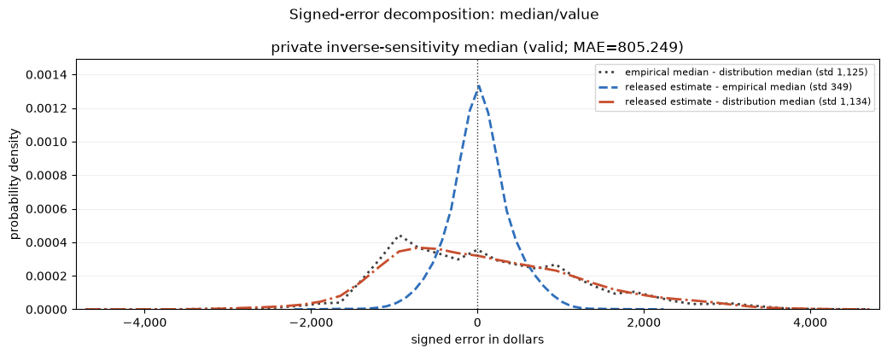
The next figure uses signed CDF error instead of dollars, with rank normalized by reference size. The distribution-error line is rank(release) / |full data| − 0.5; the empirical-error line is rank(release) / 1000 − 0.5; the gray line is the sample-vs-population CDF shift at the released value. X-axis: signed CDF error (rank / size − 0.5). Y-axis: probability per bin.
Now return to the original mean problem: release L and U with the same grid-free interval exponential mechanism as S5 (rank-distance score over the public range [0, 10M]), clip to [L, U], then add Gaussian noise to the clipped mean calibrated to (U−L)/n. The composed mechanism tracks its privacy-budget ledger in variables rather than rendering dataframe output.
Private L=1, U=434,566 | (U-L)/n=435 | Gaussian std=1,368
Private estimate: 33,953 | exact clipped mean on same D: 34,354
The next figure adds the valid private quantile-clipped mean to the mean track. It uses the same three signed-error lines: sampling gap, mechanism error, and total error.
One accuracy draw for private quantile-clipped mean: release private L, U, and noisy clipped mean on the same dataset draw.
Before the final Gaussian-style estimator, isolate the histogram issue. Exact EDA is forbidden, but a fixed-bin noisy histogram is private if the bins are public. The utility problem is binning: bins that are too wide hide the feature we need, while bins that are too narrow spend the same noisy count vector over many unstable cells.
The next plot is a private fixed-bin histogram of the size-1000 sample D. X-axis: public income bins. Y-axis: noisy counts. The bins were fixed before seeing the private sample, and each substitution changes at most two bin counts.
This cell computes the histogram sensitivity trace without rendering dataframe output: one substitution leaves one bin and enters another, so at most two bin counts change.
The sensitivity trace gives the sensitivity story, but not the accuracy story. Even with the right noise calibration, a fixed income grid can be a poor scale-localization tool when the relevant spread is multiplicative or when the useful bin width depends on the unknown standard deviation.
S8 — Gaussian Localization via Pairwise Differences (KV18)
The final scale-based idea follows Karwa & Vadhan (2018, arXiv:1711.03908). The key trick: take disjoint pairwise absolute differences|X_i − X_j|. Each difference is the absolute value of an N(0, 2σ²) variable, so the unknown mean cancels and the differences depend only on the scale σ. A noisy histogram of those differences localizes σ (each row sits in one pair, so the count vector has bounded sensitivity); the selected scale then sets the resolution for a private location search and the final μ ± 3σ clipping range used for the mean.
This is a model-dependent estimator: privacy holds by composition, but accuracy depends on the Gaussian assumption. We therefore validate it twice — first on synthetic Gaussian data, where it is accurate, then on Fulton income, where the heavy tail breaks the assumption and the mean estimate is biased low.
Code
# KV18 capstone: localize scale from a noisy histogram of disjoint pairwise# |differences|, then location, then the clipped noisy mean. All grids are public.gaussian_histogram_mean_visible =lambda x, rng: gaussian_histogram_mean( x, EPS_SCALE, EPS_LOCATION, EPS_GAUSS_MEAN, PUBLIC_SCALE_DIFF_BIN_EDGES, PUBLIC_INCOME_BIN_EDGES, rng, DELTA,)scale_demo = private_scale_from_pairwise_diffs(D, EPS_SCALE, PUBLIC_SCALE_DIFF_BIN_EDGES, rng)fig = make_private_scale_pairwise_histogram_figure(scale_demo)fig
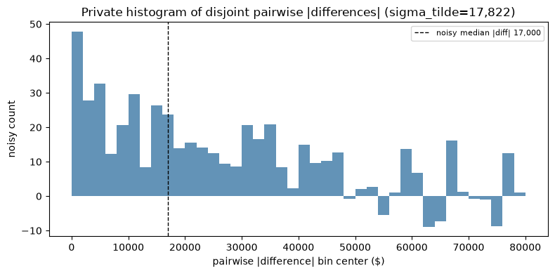
The selected scale sigma_tilde now determines the resolution for the private location search and the final mu ± 3 sigma clipping range. The next computation runs the full pipeline (scale from pairwise differences → location → clipped noisy mean) and records the intermediate private quantities.
Before income, validate where the assumption holds: a synthetic Gaussian population with a known mean. Here scale and location are well-defined, so the pairwise-difference σ̃, the location histogram μ̂, and the μ̂ ± 3σ̃ clip all behave and the estimate tracks the true mean. The next figure is the signed-error decomposition on that synthetic population (mechanism error should be small and centered).
single draw: target=40,689, estimate=41,032, error=342
Full accuracy sweep on synthetic Gaussian data. X-axis: signed error in dollars. Y-axis: probability per bin.
Code
# Side validation on synthetic Gaussian data (not appended to the income leaderboard).gaussian_loc_synth_rows = evaluate_accuracy( gaussian_histogram_mean_visible, gaussian_population, mean_targets, n=N, n_datasets=N_DATASETS, n_runs=N_RUNS, seed=SEED_MAP["accuracy_gaussian_loc_synth"], method='gaussian localization mean — synthetic Gaussian', privacy_status='model_dependent', estimate_target='mean', epsilon_total=EPS_TOTAL, notes='KV18 pairwise-difference localization on data that is actually Gaussian',)fig = make_accuracy_leaderboard_figure(gaussian_loc_synth_rows, estimate_target='mean', error_metric='value')fig
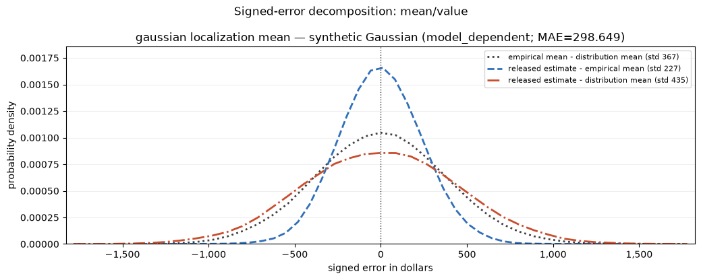
Now the same mechanism on Fulton income, which is heavy-tailed rather than Gaussian. The model breaks at every step: the pairwise-difference scale sees only the bulk spread (σ̃ ≈ 20k vs a true std ≈ 62k), the location histogram locks onto the low-income mode (μ̂ ≈ 6k, well below the 39k mean), and the resulting μ̂ ± 3σ̃ clip discards the upper tail that drives the mean. The estimate is therefore biased low (≈ 27k vs 39k). Privacy is still valid by composition; only accuracy fails — exactly because the Gaussian assumption does not hold. Compare the centering/spread here with the synthetic-Gaussian panel above.
One accuracy draw on Fulton income before the full Gaussian-localization sweep.